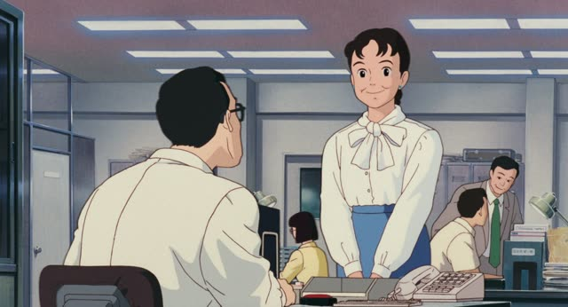
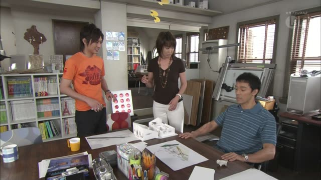

でも (Or something)

Pokémon The Series: Indigo League · Episode 2
何とかするよ弁償でも何でも。
"I'll sort it out. Pay you back [for the bike] or whatever."
でも goes right after a noun and means "or something". It takes the place of を or が.
On this card, the noun becomes just an example: paying back is one idea, but he'll do anything. 何でも adds "or anything at all".
Same in polite and casual speech. You hear it most in suggestions and invitations, often with ～ませんか or ～ましょうか.
Quartet · Episode 8
何か 楽しい話でもしましょうよ。
"Let's talk about something fun or something."
でも after a noun softens it to "... or something". On this card, 楽しい話 ("a fun talk") + でも + しましょう is a soft suggestion: it doesn't have to be exactly that.
Quick Examples
You and a friend have 30 minutes before the movie.
コーヒーでも飲む？
"Want to get a coffee or something?"
CasualA coworker looks tired after a long meeting.
お茶でも飲みませんか。
"Shall we have some tea or something?"
PoliteIt's Sunday and you're both bored.
映画でも見に行こうか。
"Should we go see a movie or something?"
CasualA guest arrives early and has to wait.
ここで雑誌でも読んでいてください。
"Please read a magazine or something here [while you wait]."
PoliteWith and without
コーヒーを飲む？
"Do you want to drink coffee?" A question about coffee, specifically.
コーヒーでも飲む？
"Want to get a coffee or something?" Coffee is just an example. It sounds relaxed, and your friend can easily say "let's get tea instead."
Not the same as the でも that means "but". That one starts a new sentence (でも、高い). This one sits right after a noun, inside the sentence (お茶でも飲む).
Examples from Media
Kekkon Dekinai Otoko · Episode 9
彼女の夢でも見てたんですか？
"Were you dreaming about your girlfriend or something?"
夢でも: "a dream or something".
Shirokuma Cafe · Episode 43
ちょっとお茶でも飲みますか。
"Shall we have some tea or something?"
お茶でも: tea, or anything else.

Only Yesterday
失恋でもしたの？
"Did you get your heart broken or something?"
失恋でもした: guessing, "a breakup or something".
Good Morning Call · Episode 6
ケンカでもした？
"Did you two have a fight or something?"
ケンカでもした: guessing what happened.
Samurai Champloo · Episode 11
お酒でも飲む？
"Want to have a drink or something?"
A soft invitation: お酒でも.
Dungeon Meshi · Episode 23
飯でも作るか。
"Guess I'll make some food or something."
飯でも作る: making a meal, nothing special.

Shirokuma Cafe · Episode 23
よかったらお茶でもしない？
"Want to get some tea or something?"
でも keeps the invitation light.

Kekkon Dekinai Otoko · Episode 9
ジムでも行ってくるかな。
"Maybe I'll go to the gym or something."
ジムでも: the gym, or somewhere like it.